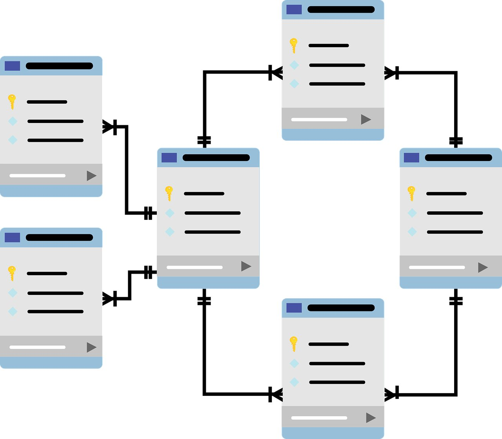
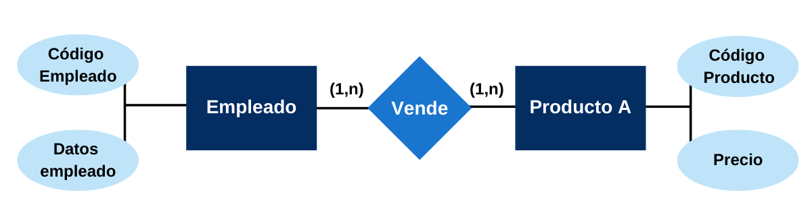

Las bases de datos son sistemas organizados para almacenar, recuperar y manejar grandes volúmenes de información de forma eficiente. Permiten la gestión estructurada de datos, facilitando el acceso rápido, la actualización y la integridad de la información. En el ámbito de la ingeniería en sistemas, el manejo adecuado de bases de datos es fundamental para desarrollar aplicaciones robustas que requieren manipulación de datos persistentes.
El modelo relacional es el paradigma más popular y ampliamente usado, donde los datos se organizan en tablas bidimensionales formadas por filas y columnas. Cada tabla representa una entidad o concepto y las relaciones entre tablas se establecen mediante claves primarias y foráneas. El lenguaje SQL (Structured Query Language) es el estándar para crear, consultar y administrar bases de datos relacionales, permitiendo desde simples consultas hasta complejas operaciones de manipulación de datos.
La fase de diseño es crucial para garantizar un sistema eficiente y fácil de mantener. Para esto se utiliza el modelo Entidad-Relación (ER), una representación gráfica que facilita la comprensión y comunicación de las estructuras y relaciones entre los datos. Las entidades representan objetos o conceptos reales, los atributos describen sus características y las relaciones definen cómo interactúan las entidades entre sí. Este modelo es la base para crear el esquema lógico de la base de datos.Ejemplo de un modelo entidad relación.
Además, la normalización es un proceso esencial para optimizar el diseño eliminando redundancias y evitando inconsistencias en los datos. Se realiza mediante diversas formas normales, que aplican reglas para distribuir atributos entre tablas de manera lógica y ordenada. Esto mejora la integridad de los datos y la eficiencia en las consultas.

Otro aspecto fundamental es el manejo de transacciones, que garantiza que múltiples operaciones en la base de datos se realicen de forma completa y consistente, incluso en presencia de fallos. Las propiedades ACID (Atomicidad, Consistencia, Aislamiento y Durabilidad) aseguran que las transacciones sean confiables, evitando pérdidas o corrupciones de datos.
| ID Alumno | Nombre | Carrera | Año Ingreso |
|---|---|---|---|
| 001 | Juan Pérez | Ingeniería en Sistemas | 2022 |
| 002 | María López | Ingeniería en Sistemas | 2021 |